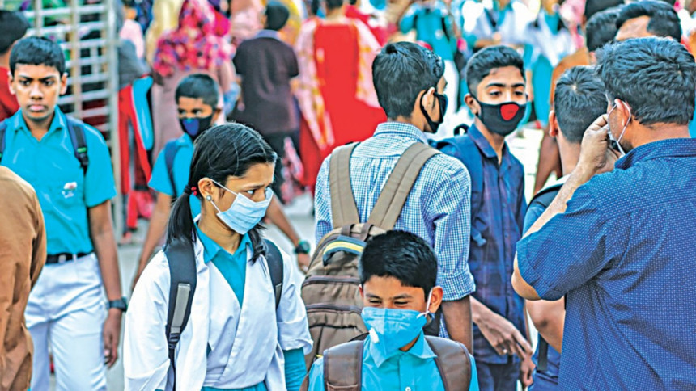

Journalism Without Fear or Favour.
Education.
Mon Sep 27, 2021 12:37 PM
This year's Secondary School Certificate (SSC) and Higher Secondary Certificate (HSC) examinations will start from November 14 and December 2 respectively
The Secondary and Higher Education Division of the education ministry published the exams' schedules on its website today.
On September 23, Bangladesh Madrasah Education Board uploaded an exam routine on its website mentioning that Dakhil (equivalent to SSC) exams would begin on November 14. Usually, SSC and equivalent exams are held in February but the coronavirus pandemic forced the government to postpone the exams.
Around 21 lakh students are expected to take the SSC and equivalent exams this session.
The authorities of Dhaka University today terminated a professor from his job on charges of distorting the country's history and defaming Father of the Nation Bangabandhu Sheikh Mujibur Rahman.
The decision to terminate Prof Morshed Hasan Khan was taken at a meeting of the university's syndicate, a member of the syndicate told The Daily Star.
He was professor of marketing department under the Faculty of Business Studies.
Earlier on April 2, 2018, DU authorities suspended him over allegations of distorting history of the Liberation War and defaming Bangabandhu and said the punishment will be effective until further notice.
Morshed had made some remarks on Bangabandhu Sheikh Mujibur Rahman and on the history in his article titled "Jyotirmoy Zia", published in a national daily on March 25, 2018.
In the article, Morshed termed Ziaur Rahman as the "announcer of independence" and claimed that most of the then Awami League leaders including Bangabandhu left the country during the war.
Soon after publishing the article, activists of Bangladesh Chhatra League protested on the DU campus on the next day.
The BCL men staged a demonstration on the campus demanding punishment of the teacher and declared him "persona non grata".
They also submitted a memorandum to the vice-chancellor urging the authorities for taking immediate actions against him. Dhaka University Teachers' Association (Duta) in a statement also demanded legal actions against the professor.
Following the protest, Morshed in a Facebook post issued an apology in this regard.
Crime & Justice
Wed Sep 9, 2020 09:18 PM
Two women were arrested last night in Dhaka for abetting suicide of a retired army sergeant in Rajshahi earlier this year.
The arrestees, Irene Yasmin (38) of Naogaon and Shamima Akter (24) of Savar of Dhaka, are teachers of a school in Savar, Rajshahi Metropolitan Police Commissioner Abu Kalam Siddique said at a press conference today.
Police on February 7, recovered the body of Mujibur Rahman from his rented residence in Rajshahi's Uposhohor Housing Estate. Mujibur and Irene allegedly were having an affair and Mujibur's lost mobile phone was recovered from Irene at the time of her arrest, said the commissioner.
A Rangpur court today discharged a Digital Security Act (DSA) case against a professor of Begum Rokeya University, Rangpur (BRUR) which was filed against her over a negative comment she posted on Facebook against former health minister late Mohammad Nasim, who was on life support at the time.
According to the court sources, Dr Md Abdul Majid, judge of Rangpur Cyber Crime Tribunal discharged Shirajum Munira, a professor of Bangla department of BRUR, after a hearing today, reports our Dinajpur correspondent.
"After examining the evidence and witnesses, the court acquitted the professor from the charge against her," Advocate Ruhul Amin Talukdar, the public prosecutor of the court, told the Daily Star over phone today. Our Dinajpur correspondent tried calling Shirajum Munira on her cell phone several times but was unable to reach her for her comments. Nasim, who was also an Awami League presidium member, passed away on June 13 last year.
On the same day of Nasim's demise, Colonel (retd) Abu Hena Mostafa Kamal, BRUR registrar, filed the case against Munira at the Tajhat Police Station and she was arrested from her residence on BRUR campus that night.
BRUR authority had suspended her from her post on June 17 last year. She landed in Rangpur jail after the arrest but secured bail from the High court on August 5 last year.